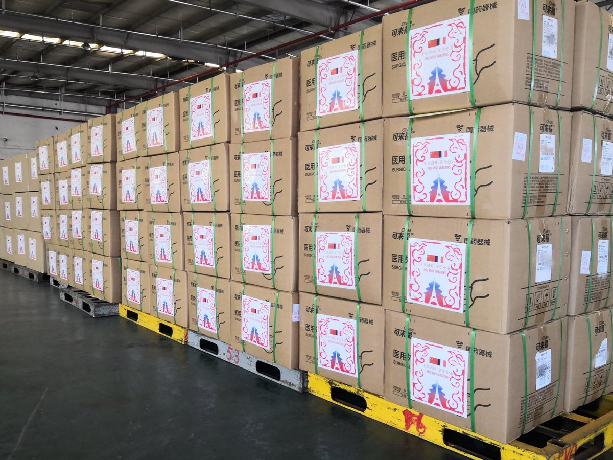

“ UNIS NOUS VAINCRONS! 6 associations loi 1901 de diplômés d’universités chinoises se mobilisent. ~230 000 masques (dont 3000 FP2) prêt à décoller en France et ~35 000€ collectés. Nous vous sollicitons une nouvelle fois et avec d’autant plus de ferveur, la solidarité franco-chinoise afin de lutter ensemble contre le Covid-19. Besoin de vous, le combat continue! ”
Source: l'Ambassade de Chine en France
>> JE VEUX PARTICIPER, JE CLIQUE ICI
Le 17 mars, notre Alliance des Alumni des Universités de Shanghai en France (AAUSF*) a émis un appel aux dons auprès de la communauté franco-chinoise en France afin de soutenir nos médecins et nos soignants français en première ligne face au Covid-19. En effet, le personnel médical court le risque d’être contaminé par manque temporaire de matériels médicaux en France : masques et vêtements de protections, etc…
En seulement une semaine, nous sommes fiers d’avoir pu mobiliser beaucoup d’entre nous ; levant déjà 148942.39 RMB (environ 19361,98€), sans compter notre donation à la fondation Hôpitaux de Paris – Hôpitaux de France (environ 16494€), et recevant des promesses de dons de matériels, soit 231200 masques chirurgicaux (dont 131200 déjà arrivés dans l’entrepôt à Shanghai), 3000 masques KN95/FFP2/N95, et 2000 vêtements de protection. Mais le combat contre l'épidémie continue et les besoins de matériel pour combattre la maladie demeurent sous très forte tension. Toute aide est extrêmement précieuse et peut aider à faire des différences. Aujourd'hui tout autant qu'hier, votre solidarité et votre générosité est utile et bienvenue. Nous vous sollicitons une nouvelle fois et avec d’autant plus de ferveur, la solidarité franco-chinoise afin de lutter ensemble contre le Covid-19.
Un stock de premiers matériels est prêt à Shanghai et nous faisons tout notre possible pour les livrer en France en urgence ! La première livraison de matériels certifié CE serait effectuée dans les prochains jours en France.
Nous tenons également à exprimer tous nos remerciements aux Chinois et aux Français qui ont déjà participé à ce geste de solidarité. Nous aimerions aussi remercier China Overseas Chinese Foundation (récompensée meilleure fondation caritative classée 5A en Chine) et la fondation Hôpitaux de Paris – Hôpitaux de France pour leurs soutiens et conseils avisées.
Pour toute question ou suggestion, vous pouvez nous contacter par courriel : aausf.info@gmail.com
*L’AAUSF est constituée de 6 associations d’étudiants et anciens élèves, enregistrées aux préfectures en France sous la loi 1901 :Nos Partenaires
Résumé des façons pour participer
Pour toute question, merci de contacter aausf.info@gmail.com ou joindre notre groupe WeChat dédié à l'activité via l'ajout par administrateur M. LV Zhihao (ID: lvzhihao1995).
Façon 1
Vous souhaitez effectuer un don financier à China Overseas Chinese foundation afin d'acheter les matériels médicaux à destination des médecins et soignants en France.
Via Alipay
Alipay：fund@socf-china.org（China Overseas Chinese foundation）
ou scanner ce QR code dans Alipay
Libellé: Nom + “solidaritefrancechine”
Via Wechat pay
scanner ce QR code dans Wechat:

Libellé: Nom + “solidaritefrancechine”
Via virement bancaire
Shanghai Overseas Chinese Foundation
Tel: +86 21 3165 3720
Address: 2F No,258 West Fuxing Road,Shanghai,200031,China
USCI: 53310000501779980D
Beneficiary Account No.: 1001255329140013208
Beneficiary Bank code: ICBKCNBJSHI
Beneficiary Bank: ICBC
No.2 Huashan Road,jingan district,shanghai China
Pour demander le justificatif de don, merci d'envoyer en chinois ou en anglais la justification de transaction (capture d'écran, etc.) à wwt@socf-china.org.
Façon 2
Vous souhaitez faire don à China Overseas Chinese foundation directement sous la forme de matériels médicaux à destination des médecins et soignants en France.
Si vos matériels sont situés en Chine
Merci d'envoyer les informations concernant ces matériels (type, certificat de qualification, quantité, etc.) à aausf.info@gmail.com Nos collègues vont traiter votre message. Une fois vérifié, nous vous communiquerons l'adresse où vous devez envoyer vos matériels.
Si vos matériels sont situés en France
Nous vous conseillons de contacter directement la pharmacie ou l'hôpital situé dans votre proximité.
Façon 3
Vous souhaitez effectuer un don financier à la fondation Hôpitaux de Paris-Hôpitaux de France afin de construire des espaces de repos pour les médecins et les soignants.
Pour y participer, la fondation Hôpitaux de Paris - Hôpitaux de France, dont la présidente est Brigitte Macron, nous propose un lien sur mesure pour ceux qui souhaitent répondre aux appels de don de l'Alliance des Alumni des Universités de Shanghai en France.
Cliquez ici
Note:
Le lien ci-dessus a été préparé par la Fondation spécialement pour calculer la somme totale des dons via l'Alliance des Alumni des Universités de Shanghai en France Merci de préciser "solidaritefrancechine" dans la case Societé.N'oubliez pas de "valider par SMS" quand vous procédez dans le paiement sur le site.
Une fois le paiement réussi, vous recevrez un email de confirmation.


{kind=link}